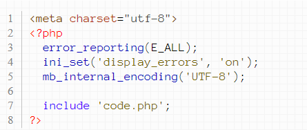

Для запуска PHP локально на вашем компьютере необходима программа-сервер. Для windows лучший вариант - OpenServer, для linux - LAMP, для macos - MAMP. Установка такого сервера займет некоторое время. Чтобы не останавливаться в обучении, выполняйте пока PHP код в онлайн редакторе, например, в этом.
Пусть у вас уже есть установленный PHP сервер. В нем ваши программы будут располагаться в файлах с расширением php. Эти файлы на самом деле представляют собой обычные HTML файлы, в которых мы можем писать HTML код наших страниц, вот так:
В этих файлах прямо внутри HTML кода мы можем писать PHP код. Он пишется в специальных скобках. Давайте сделаем это:
Если запустить этот файл через PHP сервер, то сервер выполнит команды PHP и результат отправит в браузер. Команда echo, которую вы там можете увидеть, просто выполняет вывод заданной строки. В результате в браузер улетит только HTML код, а вместо PHP кода будет стоять результат его выполнения.
Для простоты на этапе обучения лишние теги можно не писать:
Чтобы русский текст выводился корректно, необходимо выполнение нескольких условий. Во-первых, кодировка самого файла должна быть utf-8. Во-вторых, нужно указать кодировку в HTML коде:
Иногда описанные процедуры не помогают и тогда может помочь команда mb_internal_encoding:
Если вы допустите в вашем PHP коде ошибку, то сервер выведет описание этой ошибки прямо в браузер. Ошибки бывают трех типов: notice, warning и fatal. Нотисы представляют собой замечания о том, что у вас в коде может что-то быть не так. Хотя код по-прежнему будет работать. Лучше, однако, эти ошибки не оставлять без внимания, а исправлять их. Ворнинги представляют собой предупреждения о том, что что-то пошло не так. Как правило при этом ваш код запустится, но будет работать не так, как вы хотите. Фаталы возникают в том случае, когда PHP код не может быть выполнен. Как правило это будет связано с допущенной вами синтаксической ошибкой. Есть, однако, проблема. По умолчанию нотисы и ворнинги выключены, а вместо фаталов вы будете видеть просто белый экран. Это, конечно же, малоинформативно. Давайте включим вывод всех ошибок:
Иногда, однако, данная команда не сработает (зависит от настроек сервера). На помощь придет вторая команда:

Лучше сразу писать две:
На выложенном в интернет сайте вывод ошибок лучше отключать. Делается это вот так:
В соответствии с описанным полный код для запуска PHP скриптов будет выглядеть так:
>Улучшим код для запуска Полученный нами код слишком уж большой. Кроме того, если вы учитесь у меня на курсах PHP и будете присылать решение каждой задачи с этим лишнем кодом, мне будет не очень удобно его проверять. Давайте его доработаем. Для этого сделаем два файла. Пусть первый файл будет index.php и именно его вы будете запускать в браузере:
Обратите внимание на команду include, написанную в первом файле. Эта команда будет автоматически подключать код второго файла к первому. И все команды первого файла автоматически применятся к подключенному коду второго файла. А второй файл будет называться code.php. В нем вы просто будете писать PHP код и именно этот файл вы будете присылать на проверку: